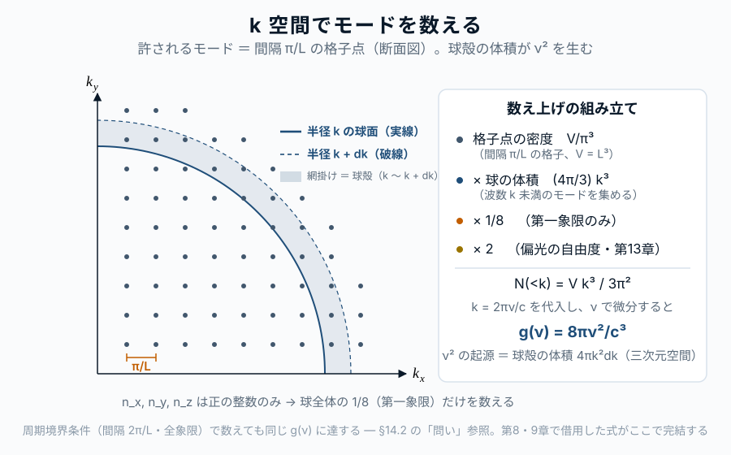

第14章 空洞中の電磁モード
この章の主題：第I〜IV部で構築してきた逆引きの 最後のピースが本章である。第13章で準備した Maxwell 方程式と完全導体壁の境界条件から、空洞中の電磁モードを数え上げ、モード密度 g(\nu) = 8\pi\nu^2/c^3 を本格的に導出する。これが第8〜10章で「借用」してきた式の起源である。導出が終われば、プランク分布
B_\nu(T) = \frac{2h\nu^3}{c^2} \cdot \frac{1}{e^{h\nu/k_BT}-1}
の前因子と指数因子の両方が、観測から逆向きに完全に説明されたことになる。本章は第V部の到達点であると同時に、第I〜V部全体（観測 → 物理）の逆引き総まとめでもある。
この章の中心地図
中心地図：プランク関数 ― 本部で扱う因子
B_\nu(T) = \frac{2 h\, \boxed{\nu^3}}{c^2} \cdot \frac{1}{e^{h\nu/kT} - 1}
強調されている \nu^3（より精確には、モード密度 8\pi\nu^2/c^3 に由来する \nu^2 と、エネルギー量子 h\nu の積。比強度への換算 c/4\pi で c が一つ戻り、前因子 2h\nu^3/c^2 になる）が、第V部で逆引きする対象である。これは空洞中の電磁場が三次元空間で離散的な定在波モードを持ち、振動数 \nu あたりのモード密度が \nu^2 に比例するという、電磁気学＋幾何の帰結である。第14章で本格的に導く。
方針：本章の結末で、強調された \nu^3 が「モード密度 \nu^2（本章で導出）× 光子のエネルギー h\nu（第IV部）」の積として完全に逆引きされる。第I〜V部の物理的逆引きはここで一度閉じる。
この章で答える問い
- 空洞中の電磁波には、どんな「許される」状態が何個あるのか
- なぜ三次元空間ではモード密度が \nu^2 に比例するのか
- プランク分布の前因子 2h\nu^3/c^2 は、モード密度と何の積から来るのか
- 偏光自由度がモードの数え上げにどう効くのか
到達目標
この章を読み終えると、読者は次のことができるようになる：
- 空洞中の電磁モードを境界条件のもとで列挙し、状態密度を導出できる
- モード密度 \propto \nu^2 が三次元の幾何から来ることを示せる
- プランク分布の三層構造（熱平衡・量子化・モード密度）の最後のピースを埋められる
14.1 空洞中の定在波 ― 境界条件と量子化
[本文目安：B2-B3]
辺長 L の立方体空洞を考える。壁は完全導体（第13章 §13.6）。三軸方向を x, y, z とし、原点を空洞の隅にとる。
第13章の平面波解 式 17.4 をそのまま入れると壁の境界条件を満たさない。代わりに、定在波（standing wave）の重ね合わせとして電場を書く。電場の x 成分は、壁 y = 0, L と z = 0, L で接線方向（E_\parallel = 0）の条件から
E_x(\mathbf{r}, t) \propto \cos(k_x x) \sin(k_y y) \sin(k_z z) \, e^{-i\omega t} \tag{18.1}
の形になる（E_y, E_z も同様に対称な形）。境界条件 \sin(k_i L) = 0 から、許される波数成分は
k_x = \frac{n_x \pi}{L}, \quad k_y = \frac{n_y \pi}{L}, \quad k_z = \frac{n_z \pi}{L} \tag{18.2}
ここで n_x, n_y, n_z は正の整数（n_i = 1, 2, 3, \ldots）。n_x = n_y = n_z = 0 では全成分が消えて自明だが、軸成分の一部だけが 0 になる場合（例：n_x = 0, n_y, n_z \ge 1）は厳密には残る偏光自由度が一つで生き残る。ただし全モード数の中でこれらは「境界の格子点」上の有限個に過ぎず、熱力学極限（V \to \infty）でモード密度には寄与しない（次節以降の積分で測度ゼロ）。本書では §14.2 以降の数え上げで n_i \ge 1 のみを扱う。
重要なポイント：境界条件が、本来連続だった波数 \mathbf{k} を離散的な格子点に量子化した。これは Planck の量子化（第10章）とは別の意味の「量子化」 ― 古典電磁気と境界条件だけから出る幾何学的離散化である。
用語：「量子化」という言葉は、本書ではここまで二度の意味で使われている：
- エネルギー量子化（第10〜12章）：エネルギーが h\nu の整数倍に離散化される。量子論固有の現象
- モード量子化（本節）：波数 \mathbf{k} が境界条件で離散化される。古典的幾何の現象
両者は別物だが、最終的に第VIII部の電磁場の量子化で統合される（各「離散的モード」が「量子化された調和振動子」となり、その励起準位が光子数）。
14.2 許される波数の数え上げ ― k 空間の格子
[本文目安：B3]
式 18.2 で許される (n_x, n_y, n_z) の組は、正の整数の三つ組である。これらを 波数空間（k-space）にプロットすると、原点付近に格子点が並ぶ。

格子間隔は各軸方向に \pi/L。したがって、波数空間における単位体積あたりの格子点密度は
\rho_{k\text{-space}} = \frac{1}{(\pi/L)^3} = \frac{L^3}{\pi^3} = \frac{V}{\pi^3} \tag{18.3}
ここで V = L^3 は空洞の体積。
波数の大きさ k = |\mathbf{k}| = \sqrt{k_x^2 + k_y^2 + k_z^2} が k 未満であるモードの個数は、波数空間で半径 k の球の体積を考えればよい。ただし格子点は正の整数のみなので、第一象限（octant, 1/8 のみ）を取る：
N_\text{mode}^{(1)}(<k) = \rho_{k\text{-space}} \cdot \frac{1}{8} \cdot \frac{4\pi k^3}{3} = \frac{V k^3}{6\pi^2} \tag{18.4}
ここで指数 (1) は「偏光自由度を考慮していない」ことを表す（次節で考慮）。
問い：なぜ「1/8 倍」が必要なのか？ 全球面 4\pi k^3/3 で何が間違うのか？
短答：許される \mathbf{k} は n_x, n_y, n_z > 0 のみ。\mathbf{k} と -\mathbf{k} は同じ定在波を生む（\cos(k_x x) = \cos(-k_x x)）ので、両方を独立に数えると過大評価になる。波数空間の第一象限だけが独立なモードを表す。
もう一歩：もし周期境界条件（壁ではなく端と端をつなぐ）にすると、\mathbf{k} は正負両方とり、格子間隔は 2\pi/L に変わる。両方法は最終的に同じモード密度を与える ― 「壁にどう接続するか」は最終結果に効かない。これは第3章の「黒体放射の普遍性」を逆手にとった計算戦略である。
14.3 偏光自由度 ― 横波の2倍
[本文目安：B2-B3]
第13章 §13.4 で見たように、与えられた \mathbf{k} ベクトルに対し、独立な偏光方向は二つある（横波条件）。
式 18.4 に偏光自由度を掛けて：
N_\text{mode}(<k) = 2 \cdot \frac{V k^3}{6\pi^2} = \frac{V k^3}{3\pi^2} \tag{18.5}
これが波数 k 未満のモードの総数。V に比例するのは、大きな空洞ほどモード数が多いという当然の結果。
観測との対応：この因子 2 が、プランク分布の前因子 2h\nu^3/c^2 の先頭の 2 に直接対応する。観測される黒体スペクトル ― CMB であれ恒星であれ ― は、すべて電磁波が横波であるという幾何的事実を反映している。
14.4 振動数空間に変換 ― モード密度の正体
[本文目安：B3]
波数 k と振動数 \nu は第13章の分散関係 式 17.5 で結ばれる：k = 2\pi\nu/c。式 18.5 に代入して
N_\text{mode}(<\nu) = \frac{V}{3\pi^2} \left(\frac{2\pi\nu}{c}\right)^3 = \frac{8\pi V \nu^3}{3 c^3} \tag{18.6}
これが振動数 \nu 未満のモードの総数。微分して 振動数あたり・単位体積あたりのモード密度 を得る：
g(\nu) = \frac{1}{V} \frac{dN_\text{mode}}{d\nu} = \frac{8\pi \nu^2}{c^3} \tag{18.7}
これが第8章 式 12.4 と第9章 式 13.2 で借用していた式である。本章で本格的に逆引きが完了した。
\nu^2 の起源を辿る：
| 因子 | 起源 |
|---|---|
| \nu^2 | k 空間の球の体積 k^3 を微分した k^2（三次元空間。微分で出る係数 3 は下の 8\pi 行に計上） |
| 8\pi | 4\pi/3（球の体積） × 3（k^3 の微分） × 1/8（第一象限） × 2（偏光自由度） × (2\pi)^3/\pi^3（k = 2\pi\nu/c の三乗が格子密度 \pi^{-3} と打ち消し合い、2^3 が残る） |
| 1/c^3 | 分散関係 k = 2\pi\nu/c から |
（検算：\frac{4\pi}{3}\times3\times\frac18\times2\times2^3=8\pi。）
問い：なぜ三次元空間でモード密度が \nu^2 なのか？ 他の次元では？
短答：d 次元空間では、k 空間の球の表面積は \propto k^{d-1}。これに対応してモード密度は \nu^{d-1}。三次元なら \nu^2、二次元なら \nu、一次元なら定数。
もう一歩：もし宇宙が二次元空間だったら、モード密度は g(\nu) \propto \nu/c^2 となり（d 次元では \nu^{d-1}/c^d）、プランク分布の前因子は 2h\nu^3/c^2 ではなく \propto h\nu^2/c^2 の形をとる。黒体スペクトル全体の形（Rayleigh-Jeans 側のべき・ピーク位置・Wien 側の減衰）は完全に違うものになる。観測される黒体スペクトルの形には、私たちが三次元空間に住んでいるという情報が組み込まれている。
14.5 プランク分布の前因子への合流 ― 第I〜V部の総まとめ
[本文目安：B3｜導出：M1]
モード密度 式 18.7 を、第8章で立ち上げた振動数あたりエネルギー密度の表式に代入する。第8章 式 12.4 から：
u_\nu(T) = g(\nu) \cdot h\nu \cdot \bar{n}(\nu, T) = \frac{8\pi\nu^2}{c^3} \cdot h\nu \cdot \frac{1}{e^{h\nu/k_BT}-1} \tag{18.8}
整理すると
u_\nu(T) = \frac{8\pi h\nu^3}{c^3} \cdot \frac{1}{e^{h\nu/k_BT}-1} \tag{18.9}
比強度に変換する（等方放射場では B_\nu = c\, u_\nu / 4\pi、第4章 §4.3）：
\boxed{ B_\nu(T) = \frac{2 h \nu^3}{c^2} \cdot \frac{1}{e^{h\nu/k_BT}-1} } \tag{18.10}
プランク分布が、観測から逆向きに完全に説明された。 各因子の起源を一覧にまとめる：
| 因子 | 起源 | 章 |
|---|---|---|
| 1/(e^{h\nu/k_BT}-1) | 光子の Bose 統計＋ \mu = 0 | 第8章 |
| h\nu（指数中） | エネルギー量子化（Planck の仮説） | 第10章 |
| h\nu（前因子中） | 各モードの光子エネルギー | 第10章 |
| \nu^2（前因子中） | 三次元空洞のモード密度 | 本章 |
| 1/c^3（モード密度から） | Maxwell 方程式の分散関係 | 第13章 |
| 2（前因子の先頭） | 偏光自由度（横波） | 第13章 |
| 全体 1/c^2（1/c^3 \cdot c から） | 光速度 ＋ u_\nu \to B_\nu 変換 | 本章 |
これで第I〜V部の逆引きが完結する。
中心地図の各因子 ― 初出・借用・導出の往復：本書では、いくつかの因子を先に結果だけ借りておき、後の章で本格的に導出して借用を返すという往復構造をとった（第8章・第9章で予告した一覧がこれである）。
| 因子 | 初出（仮に使う） | 仮に借りる場所 | 本当に導出する場所 |
|---|---|---|---|
| 占有因子 1/(e^{h\nu/k_BT}-1) | 第8章 | ―（借用なし） | 第8章（Bose 統計＋\mu=0） |
| エネルギー量子 h\nu | 第IV部 | 第8章（量子化を仮定して使用） | 第10章（Planck の量子仮説） |
| モード密度 8\pi\nu^2/c^3 | 第8章 | 第8章 式 12.4・第9章 式 13.2 | 本章（第14章） |
| 偏光因子 2 | 第13章 | ―（借用なし） | 第13章（横波の2自由度） |
| u_\nu \to B_\nu 変換（c/4\pi） | 第4章 | ―（借用なし） | 第4章 §4.3 |
この往復こそが、本書が「天下りを避ける」と述べた逆引きの実装である。モード密度だけが第8・9章で借用され、本章で返済された。
観測との対応：観測される黒体スペクトル ― CMB の 2.725 K の完璧な黒体形、太陽の T \simeq 5800 K の連続光、降着円盤の多温度合成、ダストの 30 K 修正黒体 ― これらすべてが、上の表のすべての物理（電磁気・量子・統計）の同時の結果であることが、本章までの逆引きで明らかになった。観測スペクトルの一本の曲線から、現代物理学の主要分野が逆向きに再構成された。これが本書の方法論の到達点である。
14.6 空洞放射からの「展望」 ― 第VI〜VIII部への橋
[本文目安：B3-B4]
第I〜V部で確立した中心地図プランク分布を出発点として、本書は次の三方向に進む。
第VI部（現実の宇宙へ戻る）：プランク分布は理想的な完全熱平衡の式。現実の天体スペクトルがどう・なぜずれるかを扱う。修正黒体（ダスト）、灰色大気近似、多温度成分、コンプトン化、非熱的放射の混入 ― 観測スペクトルの解読に必要なすべての「ずれ」の物理。
第VII部（線スペクトル）：本書のもう一つの主柱。観測される線スペクトルの逆引き ― 原子物理、線形成、線形、観測応用 ― を、プランク分布と平行な構造で展開する。Einstein 係数（第11章）が二つの地図を結ぶ要として再登場する。
第VIII部（QED の見通し）：本章で行った「モード密度 × 量子振動子」を本格的に再定式化する。各電磁モードが量子化された調和振動子であり、励起準位が光子数。これにより本書の二つの中心地図（プランク関数と水素線吸収係数）が、同じ電磁場–物質相互作用の二側面として統合される。本章で借用していた 「ν² モード密度 × h\nu エネルギー量子」 という組合せが、第25章で「電磁場の量子化」として整理し直される。
使えるようになった道具（§14.1〜14.6）：
- 空洞内の電磁定在波を境界条件のもとで数え上げる方法（k 空間の格子）
- モード密度 g(\nu) = 8\pi\nu^2/c^3 ― 第8〜10章で借用していた式が完全に説明された
- プランク分布のすべての因子が、観測から逆向きに既知の物理（電磁気＋統計力学＋量子論）で説明されたという事実
- 中心地図プランク関数を「観測の言葉」と「物理の言葉」のあいだの橋として完全に理解する
この章で何がわかったか
中心地図に戻る・第I〜V部の総まとめ
本章で、プランク分布の前因子 2h\nu^3/c^2 の最後のピース ― モード密度 \nu^2 ― が逆引きされた。これで中心地図プランク分布のすべての因子が、観測から逆向きに既知の物理で説明された。
第I部で「観測される黒体スペクトル」として現象を確認し、第II部で放射場の記述を整え、第III部で熱平衡と Bose 統計から指数関数因子を、第IV部でエネルギー量子化から h\nu を、第V部で電磁モード密度から \nu^2/c^3 を導出した。観測の一本の曲線から、現代物理学の主要分野が逆向きに再構成されたことになる。
次部以降：これで第I〜V部の「連続スペクトル（黒体放射）の逆引き」は完結する。
- 第VI部 では、現実の天体でこの理想からどうずれるかを扱う
- 第VII部 では、もう一つの主柱線スペクトルの逆引きを展開する
- 第VIII部 では、QED で連続と線の両方の地図を統一する
演習問題
[導出補完] 解答例 は章末「解答例」にまとめてある（オンライン版では各問のボタンから開く）。まず自力で解いてから開くこと。
問題 14-1 定在波と境界条件からモード密度 8πν²/c³
[★ 難易度：☆☆☆ ] [導出補完]
§14.1〜14.4 の数え上げを通しで再現する。辺長 L の完全導体立方体。定在波 E_x\propto\cos(k_xx)\sin(k_yy)\sin(k_zz) など。
- 境界条件 E_\parallel=0 から許される波数が k_i=n_i\pi/L（n_i=1,2,\dots）になることを示せ。
- k 空間の格子点密度 V/\pi^3、第一象限（1/8 球）、偏光2を使い、|\mathbf k|<k のモード数 N(<k)=\dfrac{Vk^3}{3\pi^2} を導け。
- 分散関係 k=2\pi\nu/c を代入し N(<\nu)=\dfrac{8\pi V\nu^3}{3c^3}、微分して g(\nu)=\dfrac{1}{V}\dfrac{dN}{d\nu}=\dfrac{8\pi\nu^2}{c^3} を導け。
関連：§14.1 定在波、§14.4 モード密度／同じ式を第9章側から導いたのが演習 9-1。
問題 14-2 なぜ「1/8 倍」か ― ±k の同一視
[★ 難易度：☆☆ ] [理解を深める]
§14.2 の問いを掘る。全球 4\pi k^3/3 をそのまま使うと過大評価になる。
- なぜ許される \mathbf k は第一象限（n_x,n_y,n_z>0）だけなのか。\mathbf k と -\mathbf k が同じ定在波を表すこと（\cos(k_xx)=\cos(-k_xx)）を使って説明せよ。
- 周期境界条件（壁でなく端をつなぐ）にすると格子間隔が 2\pi/L、\mathbf k は正負両方をとる。この場合も同じ g(\nu) になることを、両効果（間隔 2 倍＝密度 1/8、全球を使う＝\times8）が打ち消すことから示せ。
- 「壁にどう接続するか」が最終結果に効かないことが、第3章の黒体放射の普遍性とどう整合するか述べよ。
関連：§14.2 波数の数え上げ／普遍性は§3.3（演習 3-1）。
問題 14-3 モード密度の次元依存性（d 次元）
[★ 難易度：☆☆ ] [理解を深める]
§14.4 は3次元で g(\nu)\propto\nu^2 になる理由が幾何にあると述べた。次元を一般化する。
- d 次元で k 空間の球の体積 \propto k^d から、|\mathbf k|<k のモード数 N(<k)\propto k^d、よって g(k)\propto k^{d-1}、g(\nu)\propto\nu^{d-1}/c^d を示せ。
- 3次元・2次元・1次元でモード密度の振動数依存を書き、それぞれ \nu^2・\nu・定数になることを確かめよ。
- もし宇宙が2次元なら、プランク分布のエネルギー密度 u_\nu=g(\nu)h\nu\bar n は \nu の何乗の前因子を持つか。「観測される黒体スペクトルの形に3次元という情報が組み込まれている」という主張を説明せよ。
関連：§14.4 モード密度の正体／モード密度の幾何は演習 9-1。
問題 14-4 プランク分布の全因子の合流 ― 第I〜V部の総まとめ
[★ 難易度：☆☆☆ ] [導出補完]
§14.5 の総まとめを自分で組み立てる。モード密度 g(\nu)=8\pi\nu^2/c^3、各モードの光子エネルギー h\nu、平均光子数 \bar n=1/(e^{h\nu/kT}-1)。
- エネルギー密度 u_\nu=g(\nu)\cdot h\nu\cdot\bar n を組み立て、u_\nu=\dfrac{8\pi h\nu^3}{c^3}\dfrac{1}{e^{h\nu/kT}-1} を示せ。
- 等方場の関係 B_\nu=\dfrac{c}{4\pi}u_\nu（第4章）を使い、B_\nu=\dfrac{2h\nu^3}{c^2}\dfrac{1}{e^{h\nu/kT}-1} を導け。
- 前因子 2h\nu^3/c^2 と指数因子 1/(e^{h\nu/kT}-1) の各部品（2、\nu^2、1/c^3、h\nu、Bose＋\mu=0）が、それぞれどの章・どの物理に由来するかを一覧にせよ。
関連：§14.5 前因子への合流／占有因子は演習 8-2・8-3、h\nu 量子化は演習 10-1、B_\nu=\frac{c}{4\pi}u_\nu は演習 4-1。
解答例
各問の「解答例を見る」ボタンを押すと、右側のパネルに解答例が表示され、問題文と見比べられる（背景は暗くならず本文はそのまま読める）。印刷版・EPUB版では下に順に掲載される。
問題 14-1 問題 14-2 問題 14-3 問題 14-4
解答 18.1.
解答例（問題 14-1）
(1) 壁 y=0,L と z=0,L で E_x の接線成分がゼロ。E_x\propto\sin(k_yy)\sin(k_zz) が y,z=0 で自動的にゼロ、y,z=L でゼロには \sin(k_iL)=0\Rightarrow k_iL=n_i\pi。よって k_i=n_i\pi/L（n_i=1,2,\dots、各軸独立）。
(2) 格子間隔 \pi/L ゆえ k 空間の格子点密度 1/(\pi/L)^3=V/\pi^3（V=L^3）。n_i>0 なので半径 k の球の第一象限（1/8）のみ：\frac18\cdot\frac{4\pi k^3}{3}。偏光2を掛けて
N(<k)=2\cdot\frac{V}{\pi^3}\cdot\frac18\cdot\frac{4\pi k^3}{3}=\frac{Vk^3}{3\pi^2}.
(3) k=2\pi\nu/c：
N(<\nu)=\frac{V}{3\pi^2}\left(\frac{2\pi\nu}{c}\right)^3=\frac{8\pi V\nu^3}{3c^3},\qquad g(\nu)=\frac1V\frac{dN}{d\nu}=\frac{8\pi\nu^2}{c^3}.
答え：k_i=n_i\pi/L、N(<k)=Vk^3/3\pi^2、g(\nu)=8\pi\nu^2/c^3。第9章の数え上げ（演習 9-1）と一致。
解答 18.2.
解答例（問題 14-2）
(1) 定在波は \cos(k_xx) や \sin(k_xx) の形で、k_x と -k_x は同じ関数（偶／奇の符号差は振幅に吸収）を与え、物理的に同一のモード。n_i を正負両方数えると同じモードを重複して数えることになる。独立なモードは n_i>0 の第一象限のみ。よって全球の 1/8。
(2) 周期境界条件では許される k_i=2\pi n_i/L（n_i=0,\pm1,\pm2,\dots）で格子間隔 2\pi/L（壁の場合の2倍）。格子点密度は (L/2\pi)^3=V/8\pi^3（壁の V/\pi^3 の 1/8）。一方 \mathbf k は正負両方とるので全球 4\pi k^3/3（1/8 球の8倍）を使う。密度の 1/8 と全球の \times8 が打ち消し、N(<k)=2\cdot\frac{V}{8\pi^3}\cdot\frac{4\pi k^3}{3}=\frac{Vk^3}{3\pi^2} と同じ。
(3) 第3章では「空洞放射のスペクトルは壁の材質によらず一意」（熱力学第二法則）と示した。境界条件の選び方（完全導体壁 vs 周期境界）が g(\nu) を変えないのは、まさにこの普遍性の現れ。計算の便宜でどちらを選んでもよく、これは普遍性を逆手にとった計算戦略。
答え：\pm\mathbf k が同一モードゆえ 1/8 球。周期境界では密度 1/8・全球 ×8 が打ち消し同じ g(\nu)。境界の選び方に依らないのは黒体の普遍性の現れ。
解答 18.3.
解答例（問題 14-3）
(1) d 次元の球の体積は \propto k^d。格子密度 \propto V/\pi^d、象限因子・偏光因子は定数なので N(<k)\propto Vk^d。微分して dN/dk\propto k^{d-1}。k=2\pi\nu/c より g(\nu)\propto\nu^{d-1}/c^d。
(2) 3次元：g\propto\nu^2/c^3。2次元：g\propto\nu/c^2。1次元：g\propto\nu^0= 定数（\propto1/c）。これは「k 空間の球殻 k^{d-1}」の幾何そのもの。
(3) 2次元では u_\nu=g(\nu)h\nu\bar n\propto\nu\cdot h\nu/(e^{h\nu/kT}-1)=h\nu^2/(e^{h\nu/kT}-1)、前因子は \nu^2（3次元の \nu^3 ではない）。スペクトル全体の形（低振動数べき・ピーク位置・全エネルギーの温度依存）が次元で変わる。逆に言えば、観測される黒体スペクトルが \nu^3 前因子を持つこと自体が、我々が3次元空間に住む証拠を含んでいる。
答え：g(\nu)\propto\nu^{d-1}/c^d。3D→\nu^2、2D→\nu、1D→定数。2次元なら u_\nu 前因子は \nu^2。スペクトル形が空間次元を反映。
解答 18.4.
解答例（問題 14-4）
(1) u_\nu=g(\nu)\cdot h\nu\cdot\bar n=\dfrac{8\pi\nu^2}{c^3}\cdot h\nu\cdot\dfrac{1}{e^{h\nu/kT}-1}=\dfrac{8\pi h\nu^3}{c^3}\dfrac{1}{e^{h\nu/kT}-1}。
(2) B_\nu=\dfrac{c}{4\pi}u_\nu=\dfrac{c}{4\pi}\cdot\dfrac{8\pi h\nu^3}{c^3}\dfrac{1}{e^{h\nu/kT}-1}=\dfrac{2h\nu^3}{c^2}\dfrac{1}{e^{h\nu/kT}-1}。（\frac{c}{4\pi}\cdot8\pi=2c、/c^3=1/c^2。）
(3) 各因子の起源：
| 因子 | 起源 | 章/演習 |
|---|---|---|
| 1/(e^{h\nu/kT}-1) | 光子の Bose 統計＋\mu=0 | 第8章（8-2,8-3） |
| h\nu（指数中・前因子中） | エネルギー量子化 | 第10章（10-1） |
| \nu^2 | 3次元空洞のモード密度 | 第14章（14-1） |
| 1/c^3 | 分散関係 k=2\pi\nu/c | 第13章（13-2） |
| 2 | 偏光自由度（横波） | 第13章（13-2,13-4） |
| 全体 1/c^2 | 1/c^3\times c（u_\nu\to B_\nu 変換） | 第14章/第4章（4-1） |
観測される一本の黒体曲線から、統計力学・量子論・電磁気学が逆向きに再構成された。
答え：u_\nu=\frac{8\pi h\nu^3}{c^3}\frac{1}{e^{h\nu/kT}-1}、B_\nu=\frac{2h\nu^3}{c^2}\frac{1}{e^{h\nu/kT}-1}。全因子が第8・10・13・14章の物理に分解される。
さらに学ぶための参考文献
- Reif, Fundamentals of Statistical and Thermal Physics (McGraw-Hill, 1965) — 空洞放射と状態数のクラシック
- Pathria & Beale, Statistical Mechanics (Academic Press, 3rd ed., 2011) — モード密度の体系的扱い
- Mandl, Statistical Physics (Wiley, 2nd ed., 1988) — 学部向け、空洞モードと黒体放射の標準的扱い
- Loudon, The Quantum Theory of Light (Oxford, 3rd ed., 2000) — 第1〜2章で電磁モードと光子の対応を体系的に